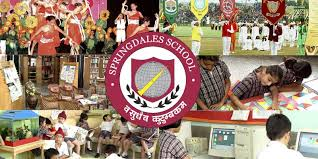

History
-
The first branch of the school was founded by Dr. Rajni Kumar and her husband late Mr. Yudister Kumar in East Patel Nagar, New Delhi on 1 September 1955. Dr Rajni Kumar is a recipient of the Padma Shri while late Mr. Yudister Kumar was a Barrister at Law and Senior Advocate of the Supreme Court of India. Subsequently, Springdales School Pusa Road and Kirti Nagar (in 1963 and 1966 respectively) were established.Springdales took birth at ½ East Patel Nagar, Delhi.In 1959 the school obtained recognition from the Educational Authorities of the state.Later the Dhaula Kuan branch opened in 1984. In 2007 another branch was opened at Sushant City, Jaipur.
Achievments
.jpg)
.jpg)
School News
-
Life Skills Education
At school students are encouraged to develop an identity through their daily interactions within and outside classroom spaces through a series of activities ranging from symposias, assemblies, group discussions, performing arts, sports and community programmes. Through this they learn to manage emotions, build relations, cope with peer pressure, communicate and negotiate in the home, school and larger community.Emphasis is laid on self awareness, empathy, critical thinking, decision making, problem solving, effective communication, interpersonal relationships , coping with stress and coping with emotions.
Our Alumni
.jpg)
.jpg)